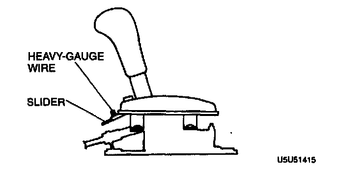
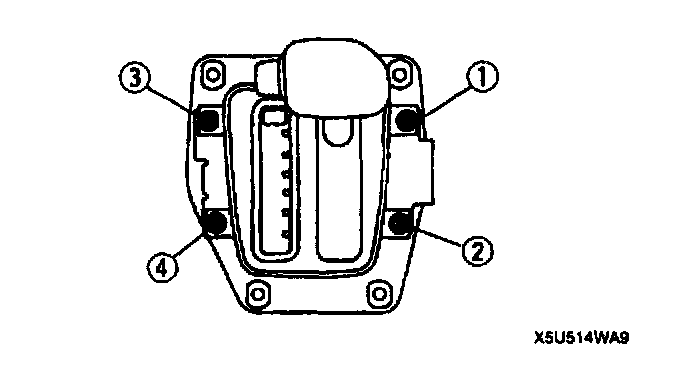

Indicator Panel Adjustment
INDICATOR PANEL ADJUSTMENT1. Shift the selector lever to P position.
2. Loosen the indicator screws.

3. Align the alignment hole in the slider with the hole in the indicator panel. Install suitable heavy-gauge wire to hole the slider.

4. Tighten the indicator mounting screws in the order shown in the figure.
Tightening torque 2.0 - 2.9 Nm (20 - 30 kgf-cm, 18 - 26 inch lbs.)
5. Remove the wire from the slider.
6. Verify that the selector lever properly aligns with the indicator in each range.
7. Verify correct operation of the emergency override button.